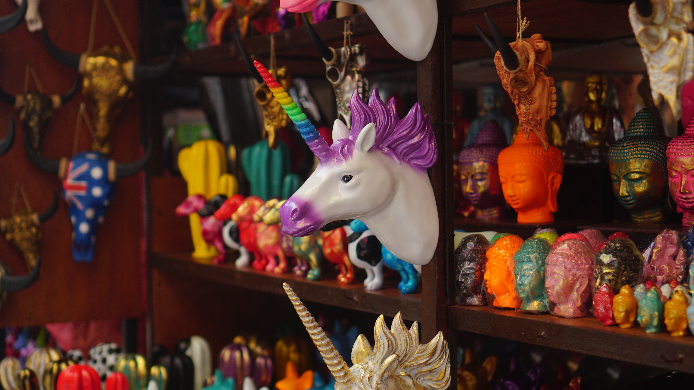

Bali Indonesia
Land of The Gods
Also known as the Land of The Gods, Bali appeals trought it sheer natural beauty of looming volcanoes
and lush terraced rice fields that exude peace and serenity. It's also famous for suffers' paradise! Bali
enchants with it's dramatic dances and colorful ceremonies, it's arts, and crafts, to it's luxurious beach
resorts ad exciting nightfile. And everywhere, you will find intricately carved temples.
Religion
Most of the Balinese are Hindu while others are Muslim, Christian/catholic and Buddhist where they live in peace and love each other. We can see the religious activity ritual by Hinduism in Bali every day. Therefore, this island is more known as an island of heaven. Bali is featured by unique cultures that most adapted from the Hindu influence that still exist in this new modern era.

The Handcrafts of the Gods
There are thousands of gift shops in Bali. From Denpasar to Ubud, you'll find many things you'd like to bring back home. Balinese signature souvenir range from delicious snacks and beverages, to the exquisite handcrafted goods like Tenun Bali.
If you are thinking of bringing home souvenirs, your best bet is the souvenir market at Sukowati, where you may be overwhelmed by choice.
Most of the starred hotels are located near the beach. Some even have their own private spots at certain beaches, where you can splurge on exclusive privilege. You can find them easily at popular spots like Kuta, Sanur, and Seminyak.
Savor the Atmosphere
As Bali is located 8 degrees south of the equator, you will find the climate to be the typical tropical, warm and humid all year round with two main distinctive seasons: Dry Season and Rainy Season. Some of the areas around Bali's central mountains (volcanoes) have several peaks over 3,000 meters above sea levels. Up here the temperatures are considerably cooler, and there is much more rainfall than in the coastal areas.
Bali’s white beaches are certainly a favorite destination for family holidays. There are a variety of watersports available, such as banana boats, parasailing or jet skiing, go swimming or you may just linger and enjoy good sunbathing by the sea.
Kuta is one of the most well-known beaches in Bali. Along with this stretch are an array of hotels, restaurants, shops, and cafes. In the evenings the area throbs to the beat of disco music.
For a quieter evening enjoy the beach at Jimbaran, a popular spot to eat fresh barbecued seafood. Seminyak is home to five-stars International hotels and luxurious accommodation studded with fancy dining spots. Sanur Beach also dotted with hotels and restaurants. You can also visit Nusa Dua, where more private beaches front super deluxe hotels.